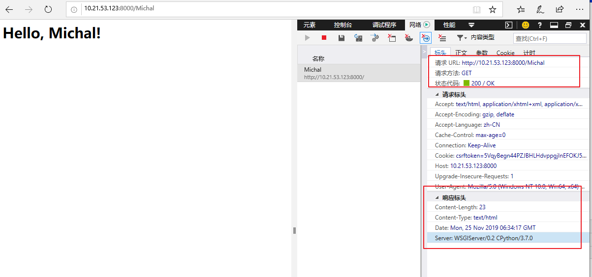
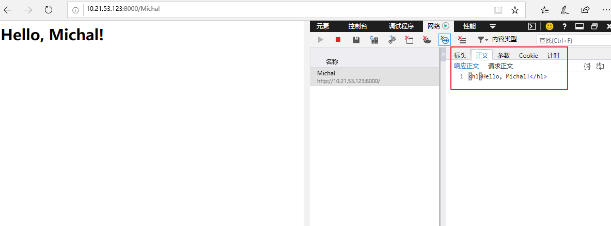

WSGI接口
- web应用的本质：
- 浏览器发送一个http请求
- 服务器收到请求，生成一个HTML文档
- 服务器把HTML文档作为HTTP相应的BODY发送给浏览器
- 浏览器收到HTTP相应，从HTTP body去除HTML文档并显示
- 最简单的web应用就是先把HTML用文件保存好，用一个线程的HTTP服务器软件，接收用户请求，从文件中读取HTML，返回。Apache、Nginx、Lighttpd等常见的静态服务器就是做这件事情的
- 如果要动态生成HTML，就要把上述步骤自己来实现。不过，接收HTTP请求、解析HTTP请求、发送HTTP相应都是苦力活，如果自己来写这些底层代码，开没开始写动态HTML，就需要花很长时间去读HTTP规范
- 正确的做法是底层代码由专门的服务器软件实现，我们用Python专注于生成HTML文档。需要一个统一的接口，让我们可以专心用Python编写web业务。
- 这个接口就是WSGI：Web Server Gateway Interface
- wsgi接口的定义非常简单，只要Web开发者实现一个函数，就可以相应HTTP请求。
def application(environ, start_response):
start_response('200 OK', [('Content-Type', 'text/html')])
return [b'<h1>Hello, web!</h1>']- 上面的application()函数就是符合WSGI标准的一个HTTP处理函数，它接收两个参数：
- environ：一个包含所有HTTP请求信息的dict对象；
- start_response：一个发送HTTP相应的函数。发送HTTP相应的Header，注意Header只能发送一次，只能调用一次start_response()函数
environ
{'XDG_SESSION_ID': '3', 'VIRTUALENVWRAPPER_SCRIPT': '/usr/bin/virtualenvwrapper.sh', 'VIRTUALENVWRAPPER_PROJECT_FILENAME': '.project', 'HOSTNAME': 'blueking', 'TERM': 'xterm', 'SHELL': '/bin/bash', 'HISTSIZE': '1000', 'SSH_CLIENT': '10.21.53.140 2395 22', 'OLDPWD': '/myshare/mysite', 'SSH_TTY': '/dev/pts/1', 'USER': 'root', 'LD_LIBRARY_PATH': '/usr/bin/lib', 'LS_COLORS': 'rs=0:di=01;34:ln=01;36:mh=00:pi=40;33:so=01;35:do=01;35:bd=40;33;01:cd=40;33;01:or=40;31;01:mi=01;05;37;41:su=37;41:sg=30;43:ca=30;41:tw=30;42:ow=34;42:st=37;44:ex=01;32:*.tar=01;31:*.tgz=01;31:*.arc=01;31:*.arj=01;31:*.taz=01;31:*.lha=01;31:*.lz4=01;31:*.lzh=01;31:*.lzma=01;31:*.tlz=01;31:*.txz=01;31:*.tzo=01;31:*.t7z=01;31:*.zip=01;31:*.z=01;31:*.Z=01;31:*.dz=01;31:*.gz=01;31:*.lrz=01;31:*.lz=01;31:*.lzo=01;31:*.xz=01;31:*.bz2=01;31:*.bz=01;31:*.tbz=01;31:*.tbz2=01;31:*.tz=01;31:*.deb=01;31:*.rpm=01;31:*.jar=01;31:*.war=01;31:*.ear=01;31:*.sar=01;31:*.rar=01;31:*.alz=01;31:*.ace=01;31:*.zoo=01;31:*.cpio=01;31:*.7z=01;31:*.rz=01;31:*.cab=01;31:*.jpg=01;35:*.jpeg=01;35:*.gif=01;35:*.bmp=01;35:*.pbm=01;35:*.pgm=01;35:*.ppm=01;35:*.tga=01;35:*.xbm=01;35:*.xpm=01;35:*.tif=01;35:*.tiff=01;35:*.png=01;35:*.svg=01;35:*.svgz=01;35:*.mng=01;35:*.pcx=01;35:*.mov=01;35:*.mpg=01;35:*.mpeg=01;35:*.m2v=01;35:*.mkv=01;35:*.webm=01;35:*.ogm=01;35:*.mp4=01;35:*.m4v=01;35:*.mp4v=01;35:*.vob=01;35:*.qt=01;35:*.nuv=01;35:*.wmv=01;35:*.asf=01;35:*.rm=01;35:*.rmvb=01;35:*.flc=01;35:*.avi=01;35:*.fli=01;35:*.flv=01;35:*.gl=01;35:*.dl=01;35:*.xcf=01;35:*.xwd=01;35:*.yuv=01;35:*.cgm=01;35:*.emf=01;35:*.axv=01;35:*.anx=01;35:*.ogv=01;35:*.ogx=01;35:*.aac=01;36:*.au=01;36:*.flac=01;36:*.mid=01;36:*.midi=01;36:*.mka=01;36:*.mp3=01;36:*.mpc=01;36:*.ogg=01;36:*.ra=01;36:*.wav=01;36:*.axa=01;36:*.oga=01;36:*.spx=01;36:*.xspf=01;36:', 'PYENV_VIRTUALENV_INIT': '1', 'VIRTUAL_ENV': '/root/.virtualenvs/django', 'WORKON_HOME': '/root/.virtualenvs', 'MAIL': '/var/spool/mail/root', 'PATH': '/root/.virtualenvs/django/bin:/root/.pyenv/plugins/pyenv-virtualenv/shims:/root/.pyenv/shims:/root/.pyenv/bin:/usr/local/sbin:/usr/local/bin:/usr/sbin:/usr/bin:/usr/local/go/bin:/root/bin', 'VIRTUALENVWRAPPER_HOOK_DIR': '/root/.virtualenvs', 'PWD': '/myshare/mysite/demo', 'LANG': 'en_US.UTF-8', 'PS1': '(django) [\\u@\\h \\W]\\$ ', 'HISTCONTROL': 'ignoredups', 'PYENV_SHELL': 'bash', 'SHLVL': '1', 'HOME': '/root', 'GOROOT': '/usr/local/go', 'LOGNAME': 'root', 'SSH_CONNECTION': '10.21.53.140 2395 10.21.53.123 22', 'GOPATH': '/root/applications/go', 'LESSOPEN': '||/usr/bin/lesspipe.sh %s', 'VIRTUALENVWRAPPER_WORKON_CD': '1', 'XDG_RUNTIME_DIR': '/run/user/0', '_': '/root/.virtualenvs/django/bin/python', 'SERVER_NAME': 'localhost.localdomain', 'GATEWAY_INTERFACE': 'CGI/1.1', 'SERVER_PORT': '8000', 'REMOTE_HOST': '', 'CONTENT_LENGTH': '', 'SCRIPT_NAME': '', 'SERVER_PROTOCOL': 'HTTP/1.1', 'SERVER_SOFTWARE': 'WSGIServer/0.2', 'REQUEST_METHOD': 'GET', 'PATH_INFO': '/Michal', 'QUERY_STRING': '', 'REMOTE_ADDR': '10.21.53.140', 'CONTENT_TYPE': 'text/plain', 'HTTP_ACCEPT': 'text/html,application/xhtml+xml,application/xml;q=0.9,*/*;q=0.8', 'HTTP_ACCEPT_LANGUAGE': 'zh-CN', 'HTTP_UPGRADE_INSECURE_REQUESTS': '1', 'HTTP_USER_AGENT': 'Mozilla/5.0 (Windows NT 10.0; Win64; x64) AppleWebKit/537.36 (KHTML, like Gecko) Chrome/70.0.3538.102 Safari/537.36 Edge/18.18362', 'HTTP_ACCEPT_ENCODING': 'gzip, deflate', 'HTTP_HOST': '10.21.53.123:8000', 'HTTP_CONNECTION': 'Keep-Alive', 'HTTP_COOKIE': 'csrftoken=5VqyBegn44PZJBHLHdvppgjlnEFOKJ5lVCe4pDPjUCL23HS3A1igl7qEzXQZMt65; sessionid=sd1ur3iadh21w64qa81esgktfjlijb33', 'wsgi.input': <_io.BufferedReader name=4>, 'wsgi.errors': <_io.TextIOWrapper name='<stderr>' mode='w' encoding='UTF-8'>, 'wsgi.version': (1, 0), 'wsgi.run_once': False, 'wsgi.url_scheme': 'http', 'wsgi.multithread': True, 'wsgi.multiprocess': False, 'wsgi.file_wrapper': <class 'wsgiref.util.FileWrapper'>}- application()函数必须由WSGI服务器来调用
- Python内置了一个WSGI服务器，这个模块叫wsgiref，它是用纯Python编写的WSGI服务器的参考实现。
hello.py
def application(environ, start_response):
start_response('200 OK', [('Content-Type', 'text/html')])
body = '<h1>Hello, %s!</h1>' % (environ['PATH_INFO'][1:] or 'web')
return [body.encode('utf-8')]server.py
# 从wsgiref模块导入:
from wsgiref.simple_server import make_server
# 导入我们自己编写的application函数:
from hello import application
# 创建一个服务器，IP地址为空，端口是8000，处理函数是application:
httpd = make_server('', 8000, application)
print('Serving HTTP on port 8000...')
# 开始监听HTTP请求:
httpd.serve_forever()python server.py


小结：无论多么复杂的Web应用程序，入口都是一个WSGI处理函数。HTTP请求的所有输入信息都可以通过environ获得，HTTP响应的输出都可以通过start_response()加上函数返回值作为Body。
复杂的Web应用程序，光靠一个WSGI函数来处理还是太底层了，我们需要在WSGI之上再抽象出Web框架，进一步简化Web开发。